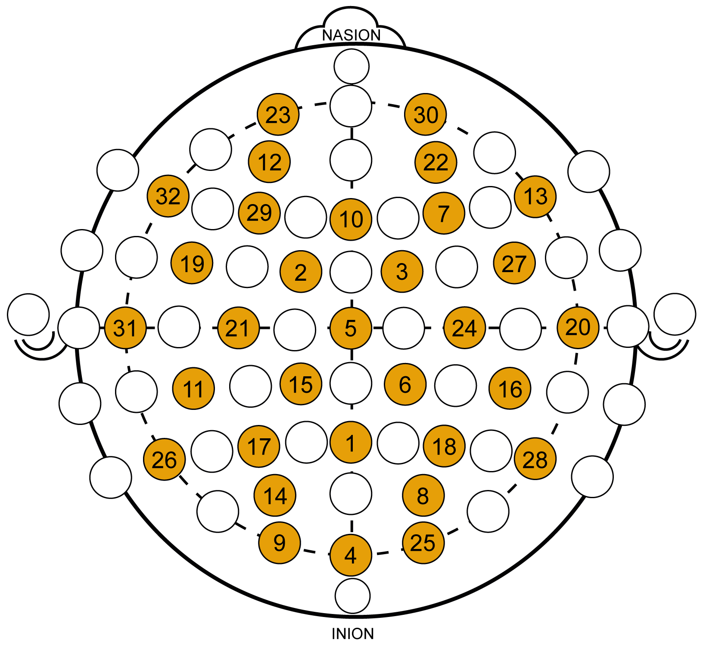
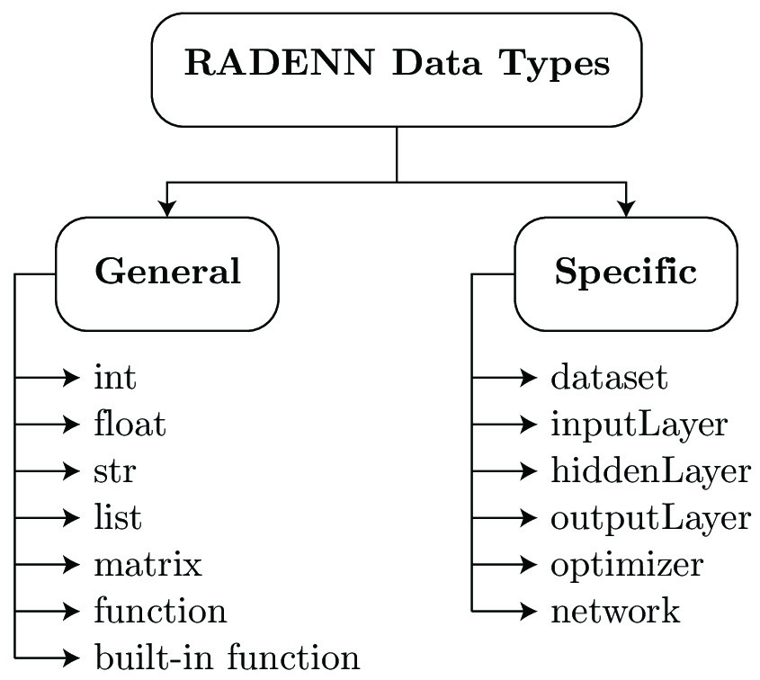
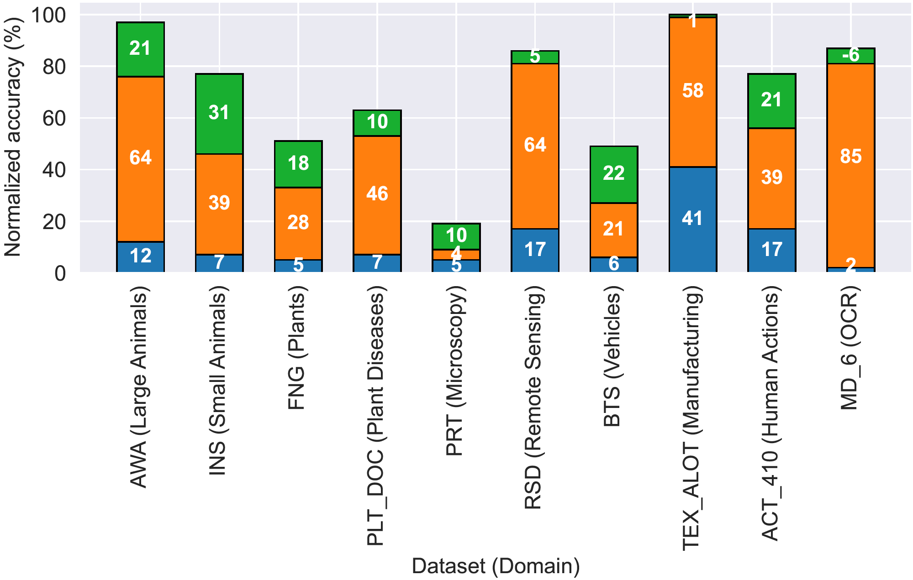
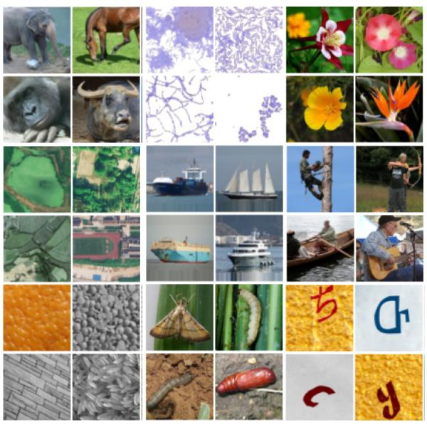
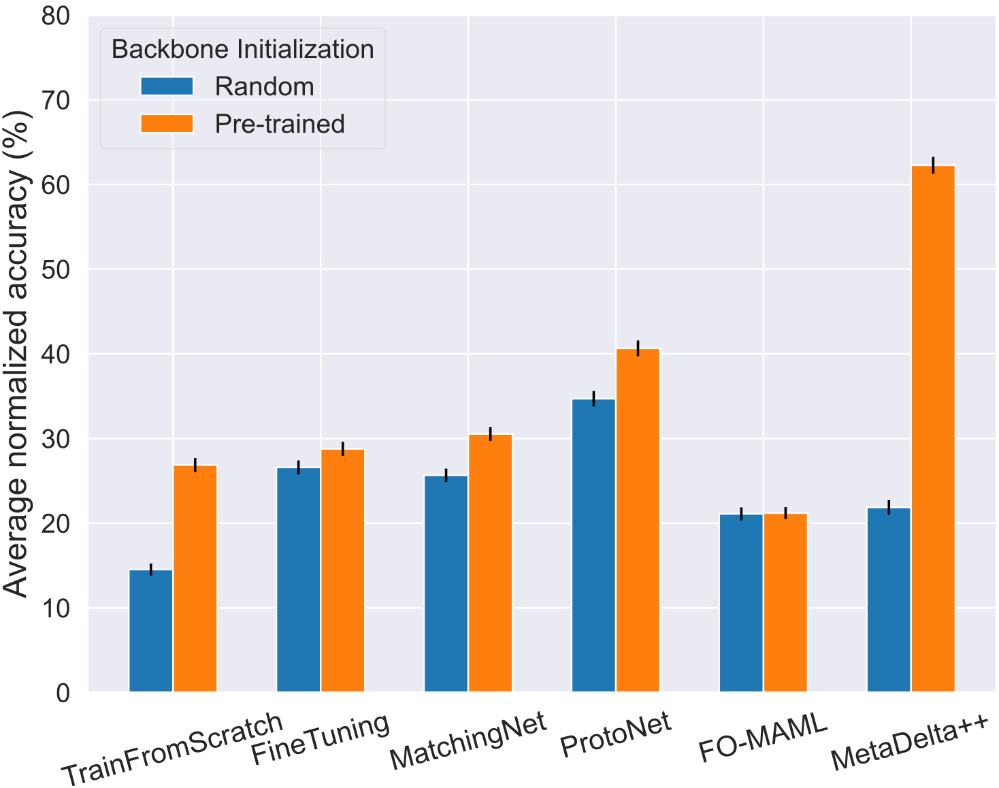
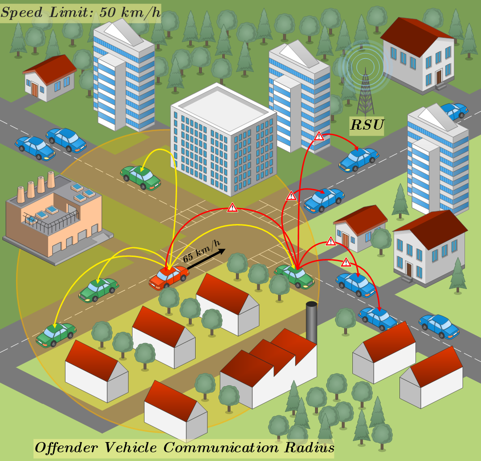
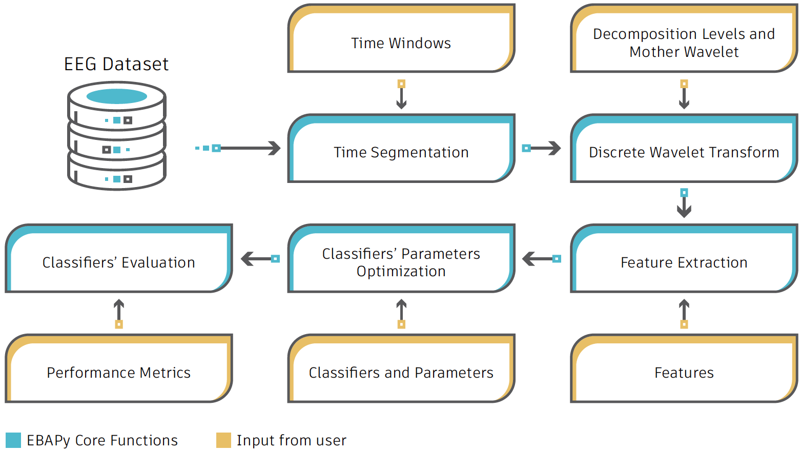
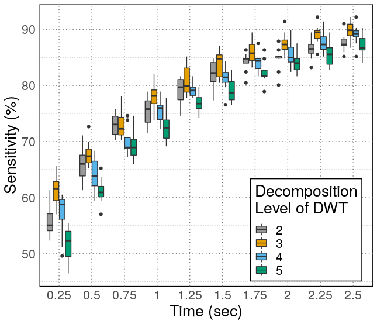
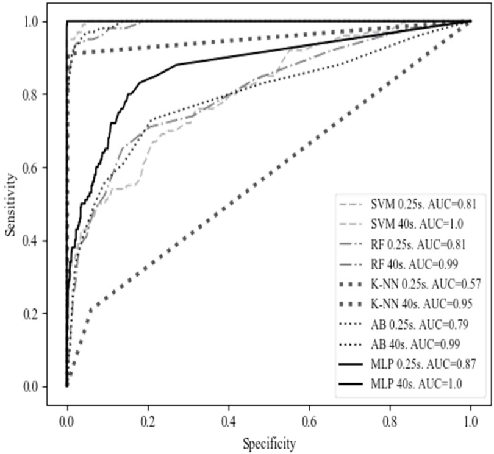

|
Dustin Carrión-Ojeda I'm a PhD student at the Image and Video Analysis Group (IVA) at TU Darmstadt, under the supervision of Prof. Dr. Sc. Simone Schaub-Meyer. My research focuses on low-shot and multimodal learning. I received my MSc in Artificial Intelligence from Université Paris-Saclay, where I worked with Prof. Isabelle Guyon, and my BEng in Information Technology from Yachay Tech University, where I was advised by Prof. Israel Pineda and Prof. Rigoberto Fonseca-Delgado. Email / CV / Bio / Google Scholar / GitHub / Twitter / LinkedIn |
ResearchI'm currently focused on learning from limited data and multiple modalities. My main research interests include developing meta-learning methods for image classification and segmentation, as well as multi-modal techniques for video understanding. Additionally, I have experience working with EEG-based biometric systems. |
Publications |
|
|
Efficient Masked Attention Transformer for Few-Shot Classification and Segmentation
Dustin Carrión-Ojeda, Stefan Roth, Simone Schaub-Meyer 2025 Accepted to GCPR [arXiv | Code] An efficient transformer that processes high-resolution correlation tokens, boosting few-shot classification and segmentation, especially for small objects, while using at least four times fewer parameters than existing methods. It supports N-way K-shot tasks and correctly outputs empty masks when no target is present. |
|

|
Evaluation of features and channels of electroencephalographic signals for biometric systems
Dustin Carrión-Ojeda, Paola Martínez-Arias, Rigoberto Fonseca-Delgado, Israel Pineda, Héctor Mejía-Vallejo 2024 Accepted to EURASIP Journal on Advances in Signal Processing [Paper] An analysis of EEG-based biometrics identifying the most relevant features and channels, reducing required electrodes from 32 to 11 while maintaining performance, with standard deviation from wavelet coefficients as the best feature. |
|

|
RADENN: A domain-specific language for the RApid DEvelopment of Neural Networks
Israel Pineda, Dustin Carrión-Ojeda, Rigoberto Fonseca-Delgado 2023 Accepted to IEEE Access [Paper | Code] A domain-specific language built on Keras, designed for fast and accessible neural network development with minimal coding. |
|

|
NeurIPS'22 Cross-Domain MetaDL Challenge: Results and lessons learned
Dustin Carrión-Ojeda, et al. 2022 Accepted to PMLR [Paper | Code] An analysis of the NeurIPS'22 Cross-Domain MetaDL Challenge results, emphasizing the impact of pre-trained backbones, overfitting prevention, and domain adaptation techniques in improving meta-learning performance across 10 domains. |
|

|
Meta-Album: Multi-domain meta-dataset for few-shot image classification
Ihsan Ullah*, Dustin Carrión-Ojeda*, Sergio Escalera, Isabelle Guyon, Mike Huisman, Felix Mohr, Jan N. van Rijn, Haozhe Sun, Joaquin Vanschoren, Phan Anh Vu 2022 NeurIPS D&B Track [Paper | arXiv | Code] A diverse meta-dataset designed for few-shot image classification and other applications, featuring 40 curated datasets from 10 domains, standardized formatting, and multiple dataset versions. |
|

|
NeurIPS'22 Cross-Domain MetaDL competition: Design and baseline results
Dustin Carrión-Ojeda, Hong Chen, Adrian El Baz, Segio Escalera, Chaoyu Guan, Isabelle Guyon, Ihsan Ullah, Xin Wang, Wenwu Zhu 2022 ECML/PKDD Workshop: Meta-Knowledge Transfer [Paper | arXiv | Code] A challenge on "any-way any-shot" image classification in a cross-domain setting. Winning solutions were blind-tested and open-sourced for broader impact. |
|

|
Performance evaluation of dissemination protocols over vehicular networks for an automatic speed fine system
Dustin Carrión-Ojeda, Cristhian Iza, Mónica Aguilar Igartua 2021 Accepted to IEEE Access [Paper] An automated system for issuing fines for speed limit violations using vehicular networks, featuring a dissemination protocol that achieves approximately 95% fine delivery in urban scenarios. |
|

|
EBAPy: A Python framework for analyzing the factors that have an influence in the performance of EEG-based applications
Dustin Carrión-Ojeda, Paola Martínez-Arias, Rigoberto Fonseca-Delgado, Israel Pineda 2021 Accepted to Software Impacts [Paper | Code] A user-friendly Python framework for developing EEG-based applications, enabling in-depth analysis of factors that influence the performance of the system and its computational cost. |
|

|
Analysis of factors that influence the performance of biometric systems based on EEG signals
Dustin Carrión-Ojeda, Rigoberto Fonseca-Delgado, Israel Pineda 2021 Accepted to Expert Systems with Applications [Paper | Code] An analysis of factors influencing the performance of EEG-based biometrics, showing that EEG recording time significantly impacts classifier accuracy. |
|

|
A method for studying how much time of EEG recording is needed to have a good user identification.
Dustin Carrión-Ojeda, Héctor Mejía-Vallejo, Rigoberto Fonseca-Delgado, Pilar Gómez-Gil, Manuel Ramírez-Cortés 2019 IEEE LA-CCI [Paper] A novel EEG-based biometric system that uses Discrete Wavelet Transform (DWT) for feature extraction and achieves approximately 90% accuracy with just 2 seconds of EEG recording. |
Posters |
|
Analysis of meta-learning methods in a more realistic cross-domain scenario
Dustin Carrión-Ojeda, Stefan Roth, Simone Schaub-Meyer 2023 ICCV Workshop: LatinX in Artificial Intelligence Research |
|
Results of the NeurIPS'22 Cross-Domain MetaDL competition
Dustin Carrión-Ojeda, Ihsan Ullah, Sergio Escalera, Isabelle Guyon, Felix Mohr, Manh Hung Nguyen, Joaquin Vanschoren 2022 NeurIPS Competition Track |
|
Analysis of factors that influence the performance of biometric systems based on EEG signals
Dustin Carrión-Ojeda, Rigoberto Fonseca-Delgado, Israel Pineda 2020 NeurIPS Workshop: LatinX in Artificial Intelligence Research |
|
Biometric system based on electroencephalogram analysis
Dustin Carrión-Ojeda, Héctor Mejía-Vallejo, Rigoberto Fonseca-Delgado, Pilar Gómez-Gil, Manuel Ramírez-Cortés 2019 NeurIPS Workshop: LatinX in Artificial Intelligence Research |
|
Based on the design and source code from Jon Barron's website |